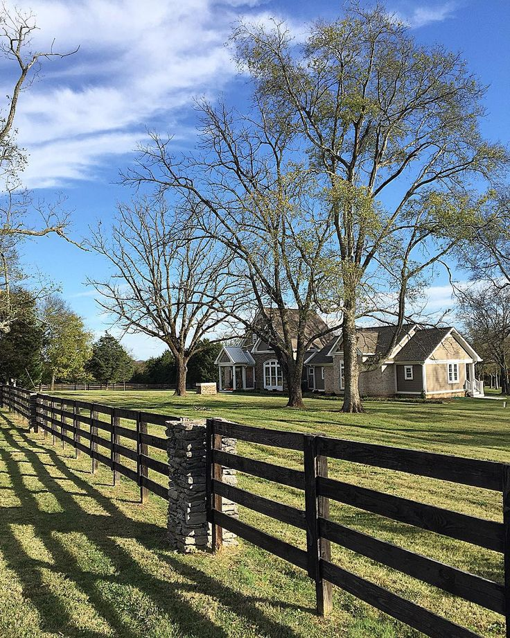

.png)
.PNG)
.PNG)
.PNG)
.PNG)
.PNG)
.JPG)
.JPG)
.PNG)
.PNG)


.jpg)
You are in for such a treat today!  We are touring the dream home of Patsy and Jeffrey Schmidt in Tennessee, and it is one of my favorite houses. Like ever. Seriously. 🙂  Now keep in mind dream homes don’t just happen overnight.  They require thought and planning…and then a lot of action.  And that was the case for the Schmidts (along with a lot of patience.)

They were living in an 1,100 sq. ft. carriage house on their property with plans to eventually build a dream home there. Â They had two daughters, and Patsy had a shop called The Briar Patch, located in Murfreesboro, NC. Â When their third daughter, Maggie Rae, was born with Down Syndrome, their plans changed. Â Patsy needed to close her business and become a stay at home mom to care for their daughter. Â But they had been living in that small carriage house for 11 years and with a third child, the Schmidts needed more room.
So after Patsy sketched out an addition on a piece of paper, Jeffrey drew it up on a simple computer program, and they hired a framer who was willing to work with them even though they had no blueprints. And that was the start of this, their dream home.

This house is truly a home, with so many objects that are treasured for their sentimentality. Â For example, the newel post in the photo above came out of an old school.

(I had to throw in another view of this pretty entrance, even if it is a Christmas shot. 🙂 )
Photos of their family and a treasured Bible verse are displayed on the wall by the staircase.

Jeffrey can build anything that Patsy asks for.  The dining room table is one of his many projects.  (He and Patsy make a pretty good team. 🙂 )


On the other side of the dining room is the large open kitchen/living room area that occupies the space that was originally the garage for the carriage house. Every brick in the brick wall is reclaimed brick that was hand-placed by the Schmidts. Â They decided to leave the duct work and beams exposed but improved their appearance by covering them with reclaimed 100 year old poplar out of Jeffrey’s grandfather’s barn.

Jeffrey also built the cabinet you see over in the corner in the next photo.

It too is surrounded by pieces that the family treasures…a heart shaped rock one of their daughters found, art by each of them, silhouettes with a Bible verse for each girl, a quote of “I have a reason to sing,” the numeral 5 for the five members of their immediate family, and many other things.

Patsy and Jeffrey are not only creative when building things, but they are also quite clever. Â Take a look at the door below. Â Patsy knew she wanted the doors in this piece to have wire in them, but there was duct work running through it. Â So they cut some books to 3 inches in size, attached them to the door, and no one can tell that they are not real books to be read. Â Pretty smart!

As you look across the room in the next photo, you see that corner with the cabinet above and their pantry with sliding barn doors. Â Jeffrey built those doors out of more wood from his grandfather’s old barn.


Everywhere you look in their home you see the most charming little vignettes. 🙂
 Â I fell in love with their wonderful pantry.
 I fell in love with their wonderful pantry.


And now to that gorgeous kitchen. Jeffrey built all the cabinets and Patsy painted and glazed them. Â The center island’s countertop is made from wood.

Here is a photo that was taken during the construction phase of the room.

The skirt below the sink is yet another charming touch in the kitchen.

And isn’t that one of the most beautiful vent hoods you’ve ever seen?! Â Patsy found some old doors at a yard sale, and Jeffrey constructed it out of them.

There is even a small windowed area upstairs that overlooks the kitchen.  Such a fun place for their children! Here is a view of their laundry room.  Their daughter loves Blabla dolls and carries them around with her all over the house. 🙂
Here is a view of their laundry room.  Their daughter loves Blabla dolls and carries them around with her all over the house. 🙂

Now take a look at the detail in the trim work of the mudroom. Â And I bet you have already guessed that Jeffrey built the bench there. Â Patsy did the painting that hangs over it.

Here is more of her artwork.

And I wanted you to see the precious baby Jesus paintings she made at Christmas.

Oh and one more thing about the mudroom. Â She and her mother just recently wallpapered it, and you can read more about that change in her latest blog post here.

Jeffrey also constructed the mirror in this half bath.

Next up, we are taking a peek in the master bathroom. Â Patsy said it took two years to construct it. Â (Remember I said building their dream house took patience.)

Patsy did all the tile work on the floor. Â She purchased plain white mosaic tile, laid out a design (several times until she got it like she wanted) removed some of the white tiles, and replaced them with some black ones. Â This created the flower pattern you see there on the floor.

She also painted the old dressers in the bathroom with Miss Mustard Seed’s milk paint and waxed them with antique wax.


The master bedroom looks like such a calm and relaxing retreat.

It too features objects that have a sentimental value for them..photographs, framed wedding vows, baby shoes that belonged to one of their daughters.

Two of the daughters share this sweet bedroom.

Here is their schoolroom/playroom/art room where all the girls hang out.


Now let’s wander outside a bit before we leave the Schmidts’ home. Â This is their covered barn porch – a great spot for entertaining!

For many years, this cattle trough has been the swimming spot for their girls in the summer.

But last year, Jeffrey started on another major project…

He installed this swimming pool!
Yes, he really did!
(I could hear you saying, No way… 🙂 )

And he built the little pool house at the end of it. Â Patsy has been painting away on it, and I can’t wait to see it all finished!

And that, dear friends, brings us to the end of our tour, but I have a few more things to share with you.  First, their home as been featured on a number of blogs and last summer in Country Living’s “50 Most Beautiful Country Homes Across All 50 States.” Recently The Cottage Journal photographed it, and it will be in their Fall 2017 issue that comes out late this summer.  I know you will want to look for that! 🙂
 But even more beautiful than this house, is the heart of this family.  I don’t think you will find a finer Christian family anywhere.  Patsy and Jeffrey’s love shows in all that they do.  They are truly blessed with talent, and they bless all of those around them with love.  Patsy’s blog, Miss Maggie Rae, documents life with Maggie Rae (or Magpie as they affectionately call her. 🙂 )  You can follow it here, and you can keep up with all their projects on her Instagram account here.
But even more beautiful than this house, is the heart of this family.  I don’t think you will find a finer Christian family anywhere.  Patsy and Jeffrey’s love shows in all that they do.  They are truly blessed with talent, and they bless all of those around them with love.  Patsy’s blog, Miss Maggie Rae, documents life with Maggie Rae (or Magpie as they affectionately call her. 🙂 )  You can follow it here, and you can keep up with all their projects on her Instagram account here.
Patsy’s blog: missmaggierae.blogspot.com
Patsy’s Instagram account: instagram.com/blessedmommatobabygirls
Thank you so much for coming along as we visited the Schmidts’ Tennessee farmhouse.
Wasn’t it beautiful?!
Until next time…


.PNG)
What a beautiful and warm home. Thanks for sharing with us.
What a great home! I love Tennessee. Thanks for sharing all the beautiful photos.
Hope you had a good Easter.
DiAnne
——————————————————————-
I’m so glad you liked it DiAnne! I hope to make more trips to Tennessee this year.
Hope you had a good Easter too!
Kelly
Loved this home!!! It was beautiful, comfy and most importantly homey!! But I also fell in love with the fence!!!!! I love the plank fence with the rock posts!! Can’t wait to read her blog. Happy Easter!! Happy Spring!!!
——————————————————————-
Hope you had a happy Easter Linda. I am so glad you enjoyed touring the farmhouse. I loved the interior so much I didn’t really notice that fence until you pointed it out. Thanks for doing so!
Kelly
Thank you for introducing this blog/family/home! I fell in love with them!! I especially loved the sayings and the pantry and the special dolls. I will enjoy following her blog. Love the state of Tennessee! Have a blessed Good Friday and Easter, Kelly!
———————————————————————-
You are quite welcome Louvina! Wasn’t that pantry something?? Hope your Easter Sunday was wonderful!
Kelly
Yes, it WAS beautiful! You had me at the first photo! I love all of the exposed brick and have resisted painting the brick inside our house. When I see photos like this, I am glad I didn’t paint our brick. Besides the brick, I love the chalkboards, buffalo checks, those industrial kitchen stools, “your” glass jars, THAT window overlooking the kitchen, the tobacco basket, the inviting bed, the island in the bedroom, AND that pool!!! Thanks for sharing it with us, Kelly! Happy Easter!
——————————————————————-
Her house makes me want brick in our kitchen…and double upper cabinets with glass doors! You are lucky to have it in your home. I knew you would love the chalkboard. 🙂 You took it all in if you noticed all those details. It was a gorgeous house to see.
Hope you had a blessed Easter, Kathy!
Kelly
I follow Patsy’s blog and love it….almost as much as your’s.
——————————————————————-
Aw you are too sweet Jeanne! Thank you. 🙂
Kelly
This is one post that I have read over and over, and it keeps blessing my heart. The love and faith built into this home by this beautiful family is so inspiring and encouraging. Thank you, Kelly, for taking us along on such a wonderful and hope-filled house journey!
——————————————————————-
Isn’t their home and family just wonderful?! I’m happy you found such pleasure in the post. 🙂
Kelly
Kelly,
What a lovely home and family. Amazing talent in both! Such great use of space and a warm and welcoming outcome.
Thanks for the introduction.
xo,
Karen
——————————————————————
I’m so glad you liked seeing the home Karen. Yes, they both have a tremendous amount of talent (and patience!) You are so right about the space being welcoming. Thank you for reading and for leaving your sweet comment here. 🙂
Hope you had a wonderful Easter!
Kelly
Thank you so much for sharing! What a wonderful home and I will look forward to her blog.
——————————————————————
Thank you for reading Lori! I know you will enjoy following along with Patsy and all of her family’s projects. 🙂
Kelly
“Jeffrey can build anything that Patsy asks for.” And Patsy has a gift, too!!!
——————————————————————-
Yes, she does! 🙂
Kelly
Thank you so much for sharing this home with all of us. I ABSOLUTELY love this home. This is my style of what I think an ideal home should be. How lucky they are to live there everyday. Once again you brighten and made my day! I can see similarities of this home and yours. I would love to see what she does for the holidays and can hardly wait until the next holiday to see what you do too.
——————————————————————
I just knew you all would love the house Dee. So glad you proved me right! 🙂 She has a January post on her blog that shows some of her Christmas decor from last year, and there are many photos in her Instagram account that show them too. She has A LOT, and I truly mean A LOT, of Christmas ornaments so she has a lot of trees. Take a look there. I know you will enjoy seeing all the pictures!
Kelly
What a beautiful, meaningful home. I loved this post! One thing I have saved for future reference is the idea of that brick wall in the kitchen. Thanks so much for sharing this because I had never seen it or even heard of this blog.
———————————————————————
I’m so happy I could introduce you to Patsy and her beautiful home, Ellen! I loved that brick wall in the kitchen too…and it is not something I would have thought of adding, but after seeing hers it certainly makes me think about doing it. Yes, save that idea for the future!
Kelly
Thank you for sharing Patsy’s home with us. What a beautiful home, family and story she has to share.
——————————————————————-
You are quite welcome, Bonnie! I’m so glad you enjoyed seeing it and hearing of Patsy’s story!
Hope you had a great Easter. 🙂
Kelly
What a coincidence – I just stumbled upon her blog yesterday and was so impressed with her words and her spirit. Thank you for sharing their beautiful home. They are a talented twosome! Happy Easter to you and yours 💐✝️
——————————————————————-
That IS a coincidence Leigh! Her spirit certainly comes through in her words on Instagram and on her blog. You are so right about the talent between her and her husband. Hope you had a beautiful Easter Sunday!
Kelly
I have just recently discovered Patsy and fell in love with the heart the emanates from every photo of their home. Thank you Kelly for sharing this beautiful story along with their lovely and inspiring home. I see and feel, faith, love and family throughout their home.
——————————————————————-
Heart is the right word…Yes, that is what you see and feel in her posts. Thank you for reading the post here sharing her story and home. I am so glad you enjoyed it Rhonda! 🙂
Kelly
Patsy’s home is one of my favorites. It is so welcoming and homey. I think you hit the nail on the head when you described the most charming little vignettes. 🙂 But it is the love of Christ and love for one another and others that truly makes their home beautiful!! 🙂
———————————————————————-
I think YOU hit the name on the head Gina. It is all their love that is the beauty there!
Kelly
Kelly — Thank you so much for this great tour! I have seen some photos of their home in other places as you noted and some of Patsy’s photos on IG, but this pulls it all together. Theirs is such an inspiring story, and I love everything about their home (I could not stop pinning!).
Have a great day!
Janet
——————————————————————
Thank you for reading the post Janet, and thank you for pinning the images to Pinterest. Patsy’s home is quite pinworthy and full of sooo many good ideas! I’m happy you enjoyed seeing all the photos of their home.
Kelly
Kelly,
Thank you for sharing such a lovely family home with us! It is stunning! You can tell how amazing their family is by how their home looks!
Dawn
———————————————————————
You are quite welcome Dawn! Thank you for taking the time to read and leave a sweet comment here!
Hope you had a lovely Easter Sunday!
Kelly
This is a charming home. I love the abundance of pictures and photographs decorating the walls. A lovely touch! I thought the occasional chairs in the living room were perfect. I wonder where she got them? The reclaimed brick also added a warm, homey feeling to the kitchen and living area. I’ll be looking forward to seeing it again in “The Cottage Journal” this fall. Once again, Kelly, you gave me some great ideas!
——————————————————————–
Yay! So glad you could find ideas here Judy! I am looking forward to seeing Patsy’s home in print too. That will be a sold out issue for sure!
Kelly
Thank you for sharing Patsy’s home. I have followed her on Instagram for a long time and agree with every word you said about them and their beautiful home. They have a sweet, sweet home and it shows in every detail.
——————————————————————
It does show, doesn’t it Sue? 🙂 Being new to Instagram, I only recently found Patsy’s home. Thank you for reassuring me that I got her story correct. (I am always nervous when I share such a personal story here in blogland. 🙂 )
Kelly
Such a lovely home. I think my favorite room is the kitchen & pantry, & entry –love the window above the kitchen. The barn porch looks very welcoming – I would like to see more of it. Very well thought out, and planned over time == something like this can’t be built all at once, it has to evolve as your lives change.
Thank you Patsy & Kelly for sharing with us.
—————————————————————–
That kitchen was amazing, wasn’t it Kristy?!! I think I could have done an entire blog post on it alone! LOL You are right about a home like that evolving over time. I think that is what gives it a sense of history.
Thank you for reading and commenting!
Kelly
Amen. I agree.
Beautiful house and family.
—————————————————————
Yes, amen!
Kelly
Oh Kelly, I have tears in my eyes reading! Happy tears! Thank you for blessing us with so many kind words and for sharing our journey! It has taken 16 years of hard work and patience, HE has been with us the entire time to help on days I honestly didn’t know if I could keep going. But it has all been worth it, to build a house for our family that just feels like ‘home’. Thank you from the bottom of my heart for writing our story so beautifully.❤
——————————————————————–
Hi Patsy!
I am thrilled that you loved the post! I always worry when I write something so personal if I am doing it justice. Your beautiful family and home deserved every single ounce of praise I could pour out. Thank you for giving me the pleasure of sharing it with my readers. Just like me, they have loved your story as I knew they would. 🙂
Kelly
How can I subscribe to Patsy’s blog? I couldn’t find a link. Her home and her story are beautiful.
——————————————————————–
Patty, I am afraid I (nor Patsy) know if that is possible. But I do know whenever she writes a new post on her blog, she alerts her readers on her Instagram account. So if you follow her there, you will find out about any new posts. 🙂
Kelly
I can see “why” this is a favorite of yours…I LOVE it too. They are very talented.
—————————————————————–
Wasn’t that a wonderful house?! I’m so happy you loved it too! And YES they are sooooo talented!!
Kelly
Thanks for sharing this lovely and creative home. It was a joy to see it.
——————————————————————–
Thank you for reading! I’m happy you liked the house!
Kelly
How awesome are they? How inspirational — as my spousal equiv. + I make up a design/build team, too. Dare I share these photos with him?
———————————————————————–
Oh yes, share away!! Soooo many good ideas to implement from their home. 🙂
Kelly
I remember the first time I saw their home on IG, I gasped! Love it all!
——————————————————————–
I totally believe that! The first time I saw it, I wanted to go through all her old insta photos to see more of it. 🙂
Kelly
What a beautiful & meaningful home! You can see that they really thought out all of the details and put their family first in the design.
——————————————————————
Yes, they did..both on the thinking out all the details AND putting their family first. And it shows in their home. 🙂
Glad you liked it!
Kelly